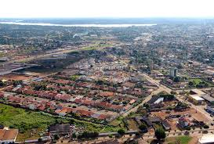

Rondônia é um estado localizado na Região Norte do Brasil, com sua capital em Porto Velho. Ele faz fronteira com os estados do Acre , Amazonas, e Mato Grosso, além de ter limites com a Bolívia. O estado foi criado em 1981, após a desmembramento do Território Federal de Rondônia, e tem uma área de aproximadamente 237.000 km².
